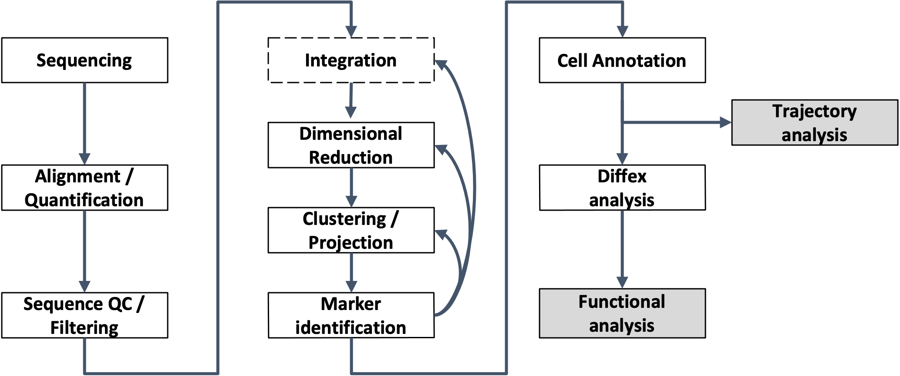

Intro to Single Cell RNA-Seq Workshop
UM Bioinformatics Core
Wrapping up
We hope you now have more familiarity with key concepts, data types, tools, and how they all connect to enable single-cell gene expression analysis from RNA-Seq data.

Housekeeping
Please take our optional post-workshop survey (5-10 minutes).
Sign up here to attend virtual office hours on 4/22 1-2 ET.
We will email you a link to the final session recordings by the end of next week.
The website/notes for this workshop will be available.
The UM Bioinformatics Core Workshop Slack channel content will be available for 90 days.
Looking ahead
Workshop environment
RStudio workshop compute environment will be available until 5/1/2024.
- Please save all your R scripts now so that we can “right-size” the compute environment immediately following today’s workshop session.
You can download files from the workshop environment from your terminal/command line window as below. (You will need to substitute your actual workshop username and type workshop password when prompted.)
mkdir intro_scrnaseq-workshop cd intro_scrnaseq-workshop scp -r YOUR_USERNAME@bfx-workshop01.med.umich.edu:"ISC_R*" .- Note that the full download of the R data is about 8Gb, so depending on your internet speeds it could take a while. (We do not recommend you download the full set of Cell Ranger outputs.)
Installing software locally
- You can install necessary programs to run programs locally. Note that for typical data, Cell Ranger steps (reviewed Day 1) assume your computer has powerful compute (many CPUs and lots of RAM) and sizable storage capacity. (i.e. it’s impractical to run these on your laptop.)
- Installing bioinformatics software is non-trivial and comprehensive instructions to setup a complete compute environment are outside the scope of this workshop. (We are considering offering a Computational Reproducibility workshop that would cover this.) For the intrepid, see relevant links below:
University of Michigan Resources
- UM CoderSpaces “office hours” and UM CoderSpaces Slack workspace. (See “Useful Resources” section of the CoderSpaces page for instructions on how to join the CoderSpaces Slack workspace.)
- Upcoming UM Advanced Research Computing workshops.
- Advanced Research Computing (ARC) at University of Michigan hosts a
high-performance computing (HPC) platform called Great Lakes
which combines high-end computers, fast/resilient storage, and
pre-installed software. Great Lakes may be a good resource for folks who
need to run the more compute intensive steps and a substantial block of
compute and storage is subsidized by ARC making it essentially free to
many UM researchers.
- About Great Lakes.
- About the ARC Research Computing Package.
- Videos on getting started with Great Lakes. (Videos are available to UM folks.)
Resources for continued learning
- Learning bioinformatic analyses is more like a process than a task.
Resources to consider:
- A CZI NDCN curated list of resources for self-guided learning
- UM Bioinformatics Core links to training resources/workshops.
- Techniques in Bash and R
- Lesson plans from the UM Bioinformatics Core’s recent Computational Foundations Workshop.
- Lessons and workshops in Bash / Git / R / Python : Software Carpentry
- More info on NGS analysis (A decidedly
non-exhaustive list in no discernible order.)
- Lesson plans from UM Bioinformatics Core’s recent RNA-Seq Demystified Workshop. (Note this is for bulk RNA-Seq.)
- Training materials from Harvard Chan Bioinformatics Core.
- Orchestrating Single-Cell Analysis with Bioconductor.
- Welcome Sanger Instutute’s Analysis of single cell RNA-seq data.
- In addition to maintaining the Seurat analysis platform, New York Genome Center’s Satija lab publishes many excellent step-by-step tutorials on single-cell analysis, e.g. Seurat - Guided Clustering Tutorial. The Satija lab also hosts Single Cell Genomics Day, a live-streamed annual symposium on emerging techniques in single-cell analysis.
- Nayak, Richa, and Yasha Hasija. “A hitchhiker’s guide to
single-cell transcriptomics and data analysis pipelines.”
Genomics vol. 113,2 (2021): 606-619.
https://pubmed.ncbi.nlm.nih.gov/33485955/ - Luecken, Malte D, and Fabian J Theis. “Current best
practices in single-cell RNA-seq analysis: a tutorial.”
Molecular systems biology vol. 15,6 e8746. 19 Jun. 2019.
https://pubmed.ncbi.nlm.nih.gov/31217225/ - He, Jiangping et al. “Practical bioinformatics pipelines for
single-cell RNA-seq data analysis.” Biophysics reports vol. 8,3
(2022): 158-169.
https://www.ncbi.nlm.nih.gov/pmc/articles/PMC10189648/
- For more context on the experiments and data we referenced during
the workshop, see the source paper:
Sorkin, Michael et al. “Regulation of heterotopic ossification by monocytes in a mouse model of aberrant wound healing.” Nature communications vol. 11,1 722. 5 Feb. 2020.
https://pubmed.ncbi.nlm.nih.gov/32024825/
Thank you to our sponsors

Thank you to/from the workshop team
 |
 |
 |
 |
|---|---|---|---|
| Chris (Gates) | Marci | Raymond | Dana |
 |
 |
||
| Nick | Travis | Chris (Sifuentes) | |
 |
 |
||
| Matt | Olivia | Tricia |
Thank you for participating in our workshop. We welcome your questions and feedback now and in the future.
Bioinformatics Workshop Team
bioinformatics-workshops@umich.edu
UM BRCF Bioinformatics Core